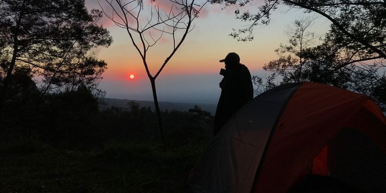
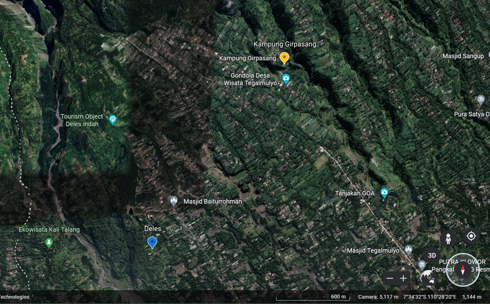

Deles Indah adalah objek wisata yang terletak di lereng sebelah timur kaki Gunung Merapi, sekitar 25 km dari pusat kota Klaten. Deles Indah berada di wilayah desa Sidorejo, Kemalang, Klaten, dengan ketinggian 800 – 1300m di atas permukaan laut Lokasi ini mempunyai potensi khusus suasana pemandangan dunia pegunungan. Lokasi Deles Indah sendiri terletak di bawah radius 10 km dari puncak Merapi ini sudah dihuni kembali.
 Letak Kampung DelesKabupaten Klaten terletak di sebelah utara dengan Kabupaten Boyolali, sebelah Timur dengan Kabupaten Sukoharjo, sebelah Selatan dengan Kabupaten Gunung Kidul/ Daerah Istimewa Yogyakarta, dan sebelah barat dengan Kabupaten Sleman Daerah Istimewa Yogyakarta.
Lokasi Deles indah dapat dicapai melalui dua rute pilihan yaitu: pertama, dari arah Boyolali, pengunjung menuju arah Jatinom, lalu berbelok ke arah kanan menuju kecamatan Kemalang, dan dapat mencapai Deles. Rute kedua, dari kota Klaten, pengunjung dapat melalui wilayah Gondang, lalu menuju ke kecamatan Kemalang, dan mencapai Deles.
Untuk pengunjung yang dari arah Yogyakarta dapat menjangkau Deles Indah melalui Gondang dan berbelok kanan menuju arah Pemalang.
Girpasang merupakan kampung yang terletak di Desa Tegalmulyo, Kecamatan Kemalang, Kabupaten Klaten. Kampung ini memiliki beragam pesona ini dan telah diresmikan menjadi salah satu objek wisata alam.
Terdapat berbagai cara untuk mencapai kampung Girpasang. Pertama pengunjung dapat melewati 1001 tangga untuk mencapai desa tersebut. Tak jarang, pengunjung yang melewati tangga tersebut akan berjumpa dengan warga Girpasang yang sangat terkenal dengan keramahannya.
Kedua, pengunjung dapat menaiki gondola yang berada di sekitar 150 meter di atas jurang. Dengan hanya membayar Rp 60.000 per 4 orang, pengunjung dapat menikmati keindahan alam Girpasang dari atas.
Atau Anda juga bisa menyebrang dengan jembatan yang diresmikan oleh Puan Maharani pada tanggal 22 Januari 2022. Jembatan ini menghubungkan Dusun Beringin dengan Kampung Girpasang.